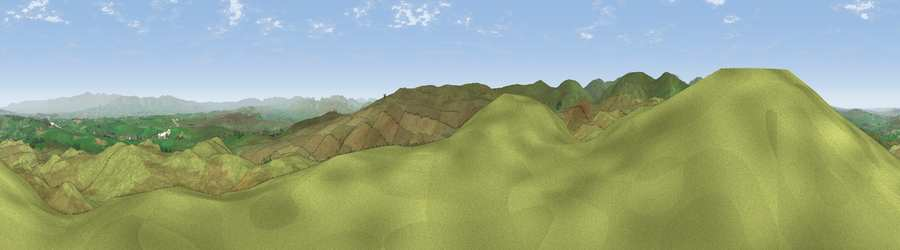

Viewpoint near Keld
#5652 in England · top 25% of its area beats it · near KeldWhere it is
The exact computed spot (NY 52675 11375). Click the marker for map links.
The view, rendered

A 360° render of this exact spot computed from the terrain model, tree cover and land cover — summer colours, afternoon light, calibrated against photographs of famous viewpoints. Real trees, hedges and buildings will differ in detail.
The panorama
Grey silhouette: terrain skyline in each direction (720 bearings, Earth curvature and refraction included). Dashed green: skyline with trees (+15 m) and buildings (+8 m) as obstacles. Blue strip: how far the ground is visible on each bearing.
Where the view opens
Wedge length = distance to the farthest visible ground on that bearing (vegetation-aware). Rings at 10, 25 and 50 km.
What fills the view
98% grassland ·
Angular shares of the visible panorama (visual magnitude), not map area. Landscape diversity 0.04 (0–1 Shannon).
Key numbers
More beautiful places nearby
The staircase of upgrades: each row has a higher view potential than everything closer. Driving times are estimates from straight-line distance, calibrated against real road routing — check an actual route before setting out.
| Place | Direction | Drive | Score |
|---|---|---|---|
| Viewpoint near Keld | E · 1 km | ~2 min | 69.9 |
| Viewpoint near Sadgill | S · 3 km | ~8 min | 73.1 |
| Viewpoint near Sadgill | S · 4 km | ~9 min | 75.7 |
| Hugh's Laithes Pike | NNW · 5 km | ~10 min | 76.8 |
| Viewpoint near Bampton | NW · 6 km | ~13 min | 77.8 |
| Viewpoint near Bampton | WNW · 7 km | ~14 min | 80.4 |
| High Street (summit) | W · 8 km | ~17 min | 82.6 |
| Viewpoint near Watermillock | NW · 12 km | ~22 min | 83.5 |
54.49548, -2.73217 · source: screening · position refined by local search. Computed location — check access rights before visiting.